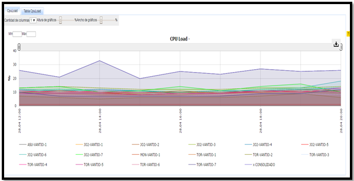
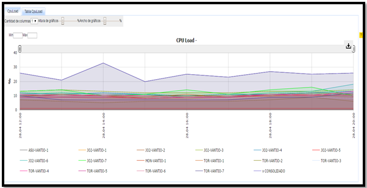

VANTIO SNMP¶
1. OBJETIVO¶
El presente documento busca explicar y detallar el proceso que genera la carga de MIBs y de OID’s mediante el protocolo SNMP hacia el servidor Guerrero para la plataforma de VANTIO.
2. ALCANCE¶
Áreas involucradas: Performance de Red
3. DEFINICIONES¶
- El servidor utilizado para levantar variables MIBS se llama guerrero.claro.amx
4. DESCRIPCION GENERAL¶
El protocolo SNMP pertenece a la capa de aplicación del modelo OSI y facilita el intercambio de información de administración entre dispositivos de red. Mediante el protocolo SNMP se puede acceder a un tipo de base de datos que contiene información jerárquica, estructurada en forma de árbol llamada MIB (MANAGEMENT INFORMATION BASE).
Cada objeto que se encuentra en esa jerarquía de MIBS tiene un identificador de objeto llamado OID. Entonces la MIB se puede identificar por una OID o por un nombre de variable.
Existen en la actualidad tres versiones de SNMP (SNMPv1, SNMPv2 y SNMPv3). Las más utilizadas son la 1 y la 2, aunque se está comenzando a utilizar la 3, una versión muy reciente, que presenta mejoras significativas, principalmente en aspectos relacionados con la seguridad. En SNMP la clave de acceso se denomina comunidad.
Para poder extraer información de las MIBS es necesario contar con los siguientes datos: • IP del servidor destino • Versión • Comunidad • OID
Para acceder a esas OID y a los datos necesarios existen ciertos comandos SNMP entre los que se encuentran:
- Snmpget: La orden snmpget se puede utilizar para obtener datos de un host remoto dado su nombre de host, la información y un OID.
Ejemplo: snmpget -c [comunidad] -v[versión] [IP] [OID]
- Snmtranslate: Esta órden es una herramiente muy poderosa que permite explorar el árbol MIB de diversas formas desde la línea de órdenes. Su forma más básica permite pasar de un OID a la variable que representa.
Ejemplo snmptranslate [OID]
- Snmpwalk: Lo que hace este comando es mostrar el árbol de MIBS desde la OID que se busca para abajo.
snmpwalk –v[versión] –c [comunidad] [IP] [OID]
En el área de calidad y performance de red hay varios proyectos que levantan datos a partir de variables MIBS, uno de los cuales es VANTIO. Los VANTIO manejan los DNS (DOMAIN NAME SYSTEM) hacia Internet. Una de las funciones principales de los DNS es asignarle nombres a las direcciones IP como es en el caso de google cuya IP es 216.58.210.163 pero al sitio web se accede mediante la dirección www.google.com.ar.
En Claro tenemos 16 VANTIOS, 1 en Asunción, 1 en Uruguay, y 14 en Argentina.
Todos esos archivos se encuentran en guerrero y la ruta es /SMART/storage01/mibsFiles/vantio/vantio/cpu-interfaces-servercache.
Dentro de esa ruta se alojan las variables MIBS transformadas en .TXT (Archivos de Texto).
El usuario de guerrero es: calidad. El password de guerrero es: Josue2415.
Si me quiero conectar a alguna de las MIBS mostradas a continuación tengo que entrar en guerrero y tirar por ejemplo el siguiente comando:

5. MACRO FLUJO DEL PROCESO¶
No aplica sub-seccion.
6. DESCRIPCIÓN DETALLADA¶
6.1. Datos Origen¶
- Server Origen y Path:
10.101.6.160 ,10.104.162.242 ,10.104.32.185 10.104.32.187 ,10.104.32.189 ,10.104.32.191 ,10.104.33.236 10.104.33.238 ,10.105.98.140 ,10.105.98.142 ,10.105.98.144 10.105.98.146 ,10.105.99.244 ,10.105.99.245 ,10.84.78.20 10.92.25.20. El path en variables MIBS se traduce en OIDS así que paso las OIDS que se consultan lo que se detalla en el siguiente ítem.
- Cantidad de archivos origen: Como se dijo anteriormente en SNMP no hay un path sino un árbol que tiene toda la información de lo que se necesita identificando cada información mediante una OID. Las OID usadas son:

- Frecuencia actualización: Son datos instantáneos
- Tipo de Archivo: OID
6.2. Datos Destino¶
- Server Destino: guerrero.claro.amx
- Conversión de Archivos: Si, convierte MIBS en archivos .txt.
- Tabla Files: [Indicar “Si” o “No” tiene tabla files]
- Tabla Auxiliar: [Indicar “Si” o “No” tiene tabla auxiliar]
- Frecuencia de corrida del proceso: cada 15 minutos levanta datos
- Regionales: NO
- RAW Si/No: SI
- Hour Si/No: Si pero en servidor perdido.claro.amx
- Day Si/No: Si pero en servidor perdido.claro.amx
- BH Si/No: Si pero en servidor perdido.claro.amx
- ISABH Si/No: Si pero en servidor perdido.claro.amx
- Países: Argentina
- Directorio Destino (File System): SMART/Storage01/mibsfiles/vantio/vantio/ (depende el KPI será el directorio).
6.3. Shell Copiar Archivos Origen a Destino y limpieza de los mismos¶
Los Scripts tienen las siguientes funciones:
1- Copiar los archivos
2- Ejecutar Pentaho:
No aplica esta sub-seccion.
6.4. Listado de Tablas Utilizadas¶
Las tablas utilizadas son las siguientes:
Las tablas utilizadas son las siguientes:
6.5. Pentaho¶
No aplica esta sub-seccion.
7. REPROCESO MANUAL¶
Pendiente
 
